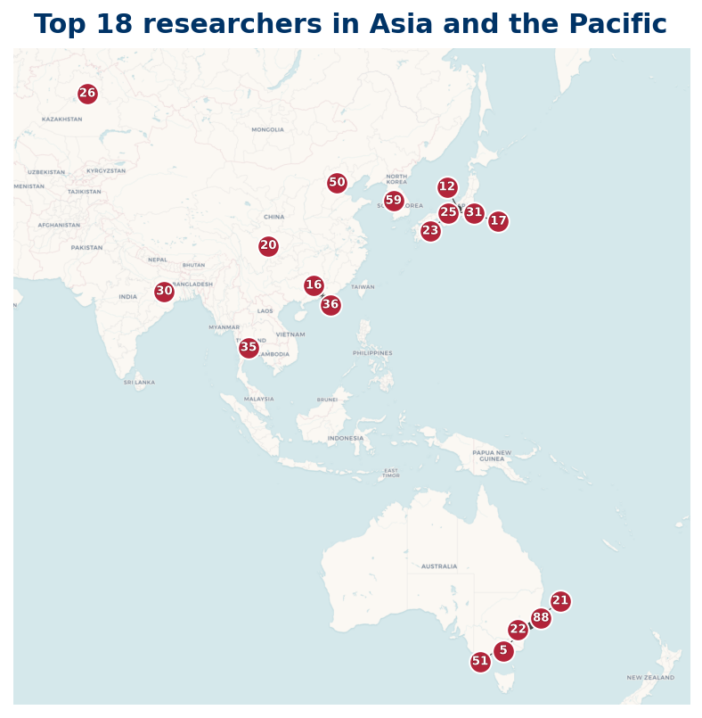

Listing
| Rank | Name | Institution | Country |
|---|---|---|---|
| 5 | Tim Trudgian | Australian National University | AU |
| 12 | Ade Irma Suriajaya | Kyushu University | JP |
| 16 | Liu S | South China Agricultural University | CN |
| 17 | Masatoshi Suzuki | Tokyo Institute of Technology | JP |
| 20 | Peng Gao | Xihua University | CN |
| 21 | Igor E. Shparlinski | UNSW Sydney | AU |
| 22 | Liangyi Zhao | UNSW Sydney | AU |
| 23 | Koji Chinen | Kindai University | JP |
| 25 | Akio Fujii | Rikkyo University | JP |
| 26 | Asset Durmagambetov | L. N. Gumilyov Eurasian National University | KZ |
| 30 | Shekhar Suman | Ranchi University | IN |
| 31 | Takashi Nakamura | Tokyo University of Science | JP |
| 35 | C. Tantisukarom | King Mongkut's Institute of Technology Ladkrabang | TH |
| 36 | J. Maurice Rojas | City University of Hong Kong | HK |
| 50 | Oussama Basta | Institute of Theoretical Physics | CN |
| 51 | P. J. Forrester | University of Melbourne | AU |
| 59 | Yoonbok Lee | Incheon National University | KR |
| 88 | Aleksander Simonič | University of New South Wales | AU |